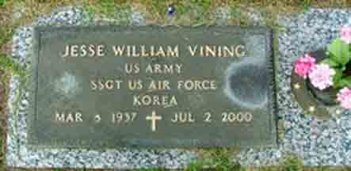
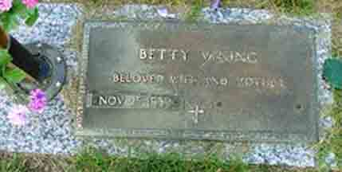
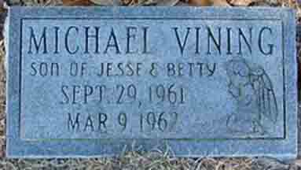

Documentation for Jesse William Vining and Betty Shelby Jean Boykin
Jesse William Vining and Betty Shelby Jean Boykin:
(
Death Data
Gravestones for Jesse William Vining and Betty Shelby Jean (Boykin) Vining, in Evergreen Memorial Park, Sumter, Sumter County, South Carolina (from Find A Grave):


Gravestone for Michael Vining, son of Jesse William Vining and Betty Shelby Jean (Boykin) Vining, in Sumter Cemetery, Sumter, Sumter County, South Carolina (from Find A Grave):
(